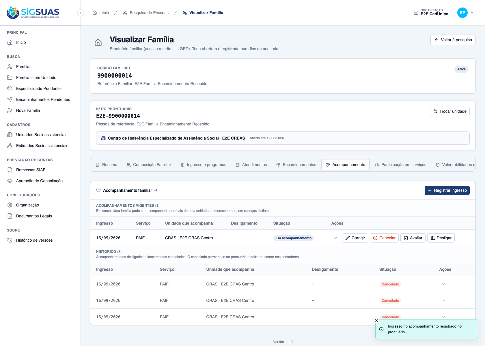
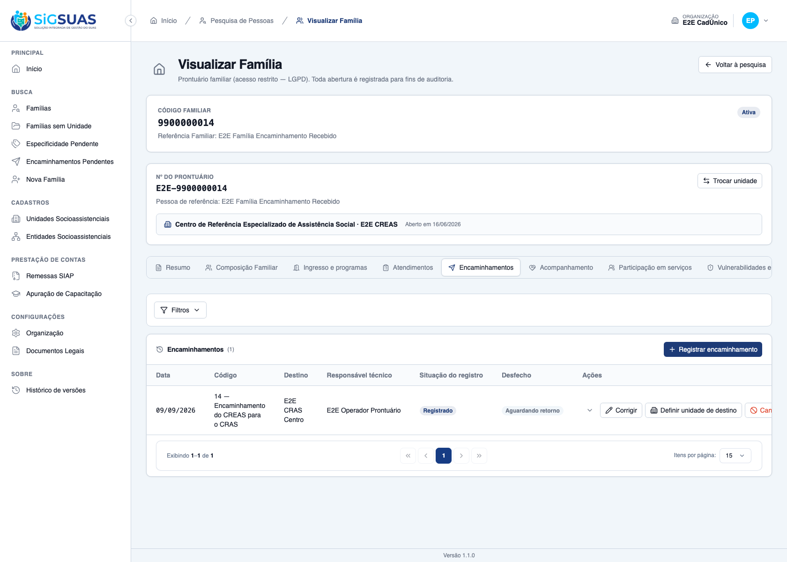
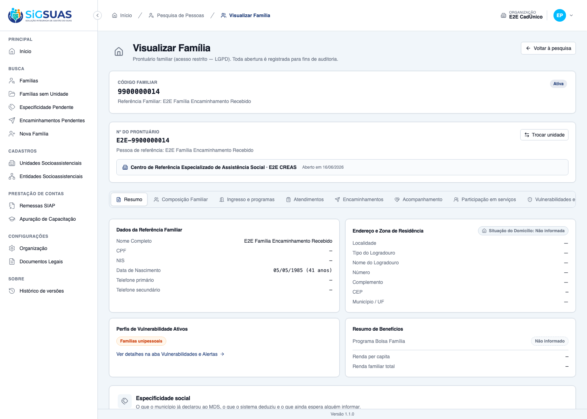
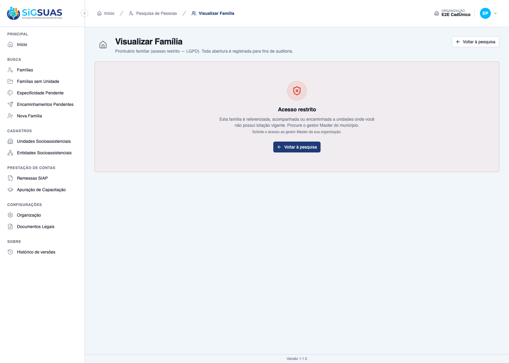

Relatório de Critérios de Aceite — US-ACOMP-06
Resumo
Dezessete critérios: treze numerados e quatro extras. Cinco evidenciados no navegador (CA01, CA02, CA03, CA05 e CA04/CA11, com seis prints) e os demais cobertos pela suíte automatizada, onde o cenário exige um segundo município, duas unidades do mesmo tipo, um segundo operador ou a leitura da trilha de auditoria. Os prints NÃO foram capturados à mão: saem do próprio caso de teste que assevera o critério, de modo que, se a asserção cair, não há imagem. A suíte do eixo de acesso fecha com 60 testes e 348 asserções, e a suíte completa da API com 4607 testes, sem falhas. Nenhum critério em falha. Esta entrega fecha a metade do CA07 que o dossiê da US-ACOMP-07 declarou pendente por design. Uma ressalva de produto, levantada pela revisão de código, está declarada nas observações: o eixo também amplia a escrita, inclusive a troca da unidade de referência — comportamento herdado, fixado por teste e submetido ao PO.
| CA | Critério | Status |
|---|---|---|
| CA01 | Unidade encaminhada acessa (happy path) | ATENDIDO · navegador + automatizado |
| CA02 | O ingresso no acompanhamento passa a ser possível sem o Master | ATENDIDO · navegador + automatizado |
| CA03 | Prontuário inteiro | ATENDIDO · navegador + automatizado |
| CA04 | Desfecho registrado encerra o acesso | ATENDIDO · navegador + automatizado |
| CA05 | Quem assumiu continua acessando depois do desfecho | ATENDIDO · navegador + automatizado |
| CA06 | Encaminhamento para órgão externo não dá acesso | ATENDIDO · automatizado |
| CA07 | Encaminhamento cancelado não dá acesso | ATENDIDO · automatizado |
| CA08 | Encaminhamento para outro CREAS não me alcança | ATENDIDO · automatizado |
| CA09 | Add-on continua obrigatório | ATENDIDO · automatizado |
| CA10 | Sem lotação vigente não acessa | ATENDIDO · automatizado |
| CA11 | Negativa contempla os três eixos | ATENDIDO · navegador + automatizado |
| CA12 | Auditoria distingue os motivos de concessão | ATENDIDO · automatizado |
| CA13 | Isolamento entre municípios inalterado | ATENDIDO · automatizado |
| CA-extra-A | A pesquisa de pessoas enxerga a família encaminhada | ATENDIDO · automatizado |
| CA-extra-B | O eixo não vaza para outro tenant | ATENDIDO · automatizado |
| CA-extra-C | Desfecho revertido reabre o acesso | ATENDIDO · automatizado |
| CA-extra-D | Via fora do domínio é recusada | ATENDIDO · automatizado |
CA01 — Unidade encaminhada acessa (happy path) ATENDIDO · navegador + automatizado
Critério (Gherkin): Dado que sou CLIENT_OPERADOR com CLIENT_FAMILY_VIEWER e lotação vigente no "CREAS" E que a família Silva é referenciada no "CRAS Centro" e não é acompanhada pelo "CREAS" E que existe referrals (Silva, origem "CRAS Centro", código "13", destination_social_unit_id = "CREAS", status 'registered', outcome 'awaiting_return') Quando eu chamar GET /api/client/families/{silva}/details Então recebo 200 E activity_log grava record_opened com access_granted_via = 'referral_received'
Como foi testado: No navegador, o operador lotado apenas na unidade de destino abre o prontuário da família referenciada em outra unidade. O activity_log é verificado pela suíte automatizada.
- O prontuário abre: o título "Visualizar Família" é exibido e nenhum painel de negativa aparece (acesso restrito, família não encontrada ou sem lotação vigente).
- Pest: “opens the record for the DESTINATION unit of an open referral, auditing via referral_received”, que confere o <code>access_granted_via</code> e o <code>social_unit_id</code> da unidade de referência.

CA02 — O ingresso no acompanhamento passa a ser possível sem o Master ATENDIDO · navegador + automatizado
Critério (Gherkin): Dado o contexto do CA01 e um serviço PAEFI oferecido pelo tipo CREAS Quando eu chamar POST /api/client/families/{silva}/follow-ups com social_unit_uuid = {creas}, follow_up_service_uuid = {paefi} Então recebo 201 E um novo GET …/details grava access_granted_via = 'follow_up' (D04)
Como foi testado: Pelo próprio operador, sem intervenção do Master: aba Acompanhamento → registrar ingresso na unidade de destino. É a circularidade que motivou a HU — antes, só o Master conseguia fazer este primeiro lançamento.
- O ingresso é aceito (201) e a linha vigente passa a exibir a unidade.
- Pest prova a ordem da decisão (D04): com acompanhamento <b>e</b> encaminhamento abertos, a via auditada é <code>follow_up</code>, o eixo mais estável, e não <code>referral_received</code>.

CA03 — Prontuário inteiro ATENDIDO · navegador + automatizado
Critério (Gherkin): Dado o contexto do CA01 Quando eu chamar members, intake, social-programs, age-profile, attendances, referrals e follow-ups da família Silva Então todas respondem 200 E enxergo registros feitos por qualquer unidade
Como foi testado: Navegação pelas abas do prontuário e conferência de que o encaminhamento registrado pela unidade de origem é visível para a unidade de destino.
- As abas abrem sem negativa.
- O encaminhamento da origem aparece com o destino correto e o desfecho "Aguardando retorno".
- Pest cobre as demais rotas do prontuário uma a uma.

CA04 — Desfecho registrado encerra o acesso ATENDIDO · navegador + automatizado
Critério (Gherkin): Dado o contexto do CA01 Quando eu chamar POST …/referrals/{r}/counter-references com outcome = 'not_attended' Então recebo 201 E sem acompanhamento aberto, o próximo GET …/details retorna 403 com error_code = "unit_not_assigned" E a mensagem não contém nome de unidade
Como foi testado: Com o desfecho lançado e o acompanhamento cancelado, o operador recarrega o prontuário.
- O acesso cessa na requisição seguinte: a tela passa a exibir o painel de acesso restrito.
- O <code>error_code</code> permanece <code>unit_not_assigned</code> — contrato consumido pelo frontend.
- Na tela foi usado o desfecho "Atendido" (o mesmo caminho); a suíte cobre <code>not_attended</code> literal, além de <code>closed_without_response</code>, cancelado, soft-deletado e FK nula.

CA05 — Quem assumiu continua acessando depois do desfecho ATENDIDO · navegador + automatizado
Critério (Gherkin): Dado que registrei o ingresso no PAEFI do "CREAS" (CA02) e depois o desfecho 'attended' Quando eu abrir o prontuário Então recebo 200 E activity_log grava access_granted_via = 'follow_up', não 'referral_received'
Como foi testado: O operador lança o desfecho do encaminhamento e reabre o prontuário, ainda com o acompanhamento vigente.
- O prontuário continua abrindo, agora sustentado pelo acompanhamento.
- Pest confirma que a via auditada passa a ser <code>follow_up</code>.

CA06 — Encaminhamento para órgão externo não dá acesso ATENDIDO · automatizado
Critério (Gherkin): Dado que o "CRAS Centro" registrou encaminhamento "05" da família Silva, destination_social_unit_id NULL Quando eu, lotado no "CREAS", abrir o prontuário Então recebo 403 unit_not_assigned
Como foi testado: Critério de backend: o eixo lê apenas a chave estrangeira, nunca o texto do destino.
- Pest: “does NOT grant access through an external referral (destination FK NULL)”.
Evidência por cobertura automatizada — ver Anexo.
CA07 — Encaminhamento cancelado não dá acesso ATENDIDO · automatizado
Critério (Gherkin): Dado um encaminhamento "13" para o "CREAS" sobre a família Souza com status = 'cancelled' Quando eu, lotado no "CREAS", abrir o prontuário Então recebo 403 unit_not_assigned
Como foi testado: Critério de backend.
- Pest: “does NOT grant access through a CANCELLED referral”.
- Um caso dedicado varre todos os desfechos: só <code>registered</code> + <code>awaiting_return</code> concede.
Evidência por cobertura automatizada — ver Anexo.
CA08 — Encaminhamento para outro CREAS não me alcança ATENDIDO · automatizado
Critério (Gherkin): Dado um encaminhamento "13" da família Silva com destination_social_unit_id = "CREAS Norte" E que sou lotado apenas no "CREAS Sul" Quando eu abrir o prontuário Então recebo 403 unit_not_assigned
Como foi testado: Critério de backend: exige duas unidades do mesmo tipo, cenário que a massa da tela não possui.
- Pest: “does not let a referral to ANOTHER CREAS reach me”.
Evidência por cobertura automatizada — ver Anexo.
CA09 — Add-on continua obrigatório ATENDIDO · automatizado
Critério (Gherkin): Dado que sou Operacional lotado no "CREAS" de destino, SEM CLIENT_FAMILY_VIEWER Quando eu abrir o prontuário Então recebo 403 com details_access_denied E activity_log grava record_access_denied com reason = 'missing_addon' E referral_social_unit_ids do outcome é []
Como foi testado: Critério de backend.
- Pest: “does not let the referral replace the LGPD add-on”.
- <b>Ressalva declarada:</b> o 403 chega pelo gate de rota, <i>antes</i> do controller, então o registro <code>record_access_denied</code> com motivo <code>missing_addon</code> não é alcançável por HTTP — comportamento pré-existente, idêntico ao da US-ACOMP-04. O teste prova o invariante consultando o ponto único de decisão diretamente.
Evidência por cobertura automatizada — ver Anexo.
CA10 — Sem lotação vigente não acessa ATENDIDO · automatizado
Critério (Gherkin): Dado que minha lotação no "CREAS" foi encerrada (end_date <= hoje) E que o "CREAS" é destino de encaminhamento sem desfecho sobre a Silva Quando eu abrir o prontuário Então recebo 403 com error_code = "no_active_assignment"
Como foi testado: Critério de backend.
- Pest: “does not let the referral replace an ACTIVE unit assignment”.
Evidência por cobertura automatizada — ver Anexo.
CA11 — Negativa contempla os três eixos ATENDIDO · navegador + automatizado
Critério (Gherkin): Dado que sou Operacional lotado apenas no "CRAS Rural" E que a Silva é referenciada no "CRAS Centro", acompanhada e encaminhada ao "CREAS" Quando eu abrir o prontuário Então recebo 403 unit_not_assigned E a mensagem (pt_BR) contém "referenciada", "acompanhada", "encaminhada" e "Master" E não contém "CRAS Centro", "CREAS", "CRAS Rural" nem ":unit"
Como foi testado: O texto exibido na tela é lido e verificado palavra a palavra, nos dois sentidos: o que deve conter e o que não pode conter.
- A mensagem declara os três eixos e orienta procurar o gestor Master.
- Nenhum nome de unidade aparece — é a garantia de LGPD do critério: a negativa não revela onde a família é atendida a quem não tem acesso a ela.
- Pest repete a asserção nos dois idiomas.

CA12 — Auditoria distingue os motivos de concessão ATENDIDO · automatizado
Critério (Gherkin): Dado que abriram o prontuário da mesma família: um pela referência, um pelo acompanhamento, um pelo encaminhamento recebido e o Master (e, noutra família sem unidade, um pela transição) Quando eu consultar activity_log (log_name 'family_access', event 'record_opened') Então access_granted_via traz exatamente {'unit_assignment','follow_up','referral_received','master_bypass','transition'}
Como foi testado: Critério de backend.
- Pest: “audits the FIVE distinct access vias, exactly”, comparando o conjunto com a lista fechada de vias.
Evidência por cobertura automatizada — ver Anexo.
CA13 — Isolamento entre municípios inalterado ATENDIDO · automatizado
Critério (Gherkin): Dado que sou usuário do município A Quando eu tentar acessar o prontuário de família do município B Então recebo 404
Como foi testado: Critério de backend: exige um segundo município.
- Pest: “keeps the organization isolation ahead of the referral axis”, comparando o corpo do 404 com o de um identificador inexistente.
Evidência por cobertura automatizada — ver Anexo.
CA-extra-A — A pesquisa de pessoas enxerga a família encaminhada ATENDIDO · automatizado
Critério (Gherkin): Dado o contexto do CA01 Quando eu chamar GET /api/client/person-search por um integrante da Silva Então ele aparece no resultado E depois do desfecho (CA04) deixa de aparecer
Como foi testado: Critério de backend — é o recorte por consulta, que usa o mesmo predicado do eixo.
- Pest: “lists the REFERRED family in the person search, opens it from there, and drops it after the outcome”.
- A revisão de código extraiu o SQL gerado e confirmou a correlação correta com a família, sem vazar registros de terceiros.
Evidência por cobertura automatizada — ver Anexo.
CA-extra-B — O eixo não vaza para outro tenant ATENDIDO · automatizado
Critério (Gherkin): Dado um encaminhamento do tenant B cuja destination_social_unit_id é numericamente igual à minha unidade de lotação no tenant A Quando eu, do tenant A, abrir a família do tenant B Então recebo 404 E o predicado filtra referrals.tenant_id explicitamente
Como foi testado: Critério de backend, adversarial.
- Pest: “filters the referral axis by tenant_id, even with a numerically identical destination_social_unit_id”.
Evidência por cobertura automatizada — ver Anexo.
CA-extra-C — Desfecho revertido reabre o acesso ATENDIDO · automatizado
Critério (Gherkin): Dado o CA04 concluído (acesso encerrado) Quando o "CRAS Centro" chamar PATCH …/referrals/{r}/outcome com outcome = 'awaiting_return' Então o próximo GET …/details do "CREAS" retorna 200 via 'referral_received' E activity_log 'referral' registra a reversão com causer_id
Como foi testado: Critério de backend. Também é exercitado na prática: é assim que o spec de navegador devolve a massa ao ponto de partida a cada execução.
- Pest: “REOPENS the access when the origin unit reverts the outcome to awaiting_return, with the reversal audited”.
Evidência por cobertura automatizada — ver Anexo.
CA-extra-D — Via fora do domínio é recusada ATENDIDO · automatizado
Critério (Gherkin): Quando FamilyAccessAuditService::recordOpened for chamado com accessGrantedVia = 'qualquer' Então lança InvalidArgumentException e nada é gravado
Como foi testado: Critério de backend (teste unitário).
- A guarda roda <b>antes</b> de qualquer escrita, e o teste confirma que o registro de auditoria fica vazio após a exceção.
Evidência por cobertura automatizada — ver Anexo.
Observações e ressalvas
Fecha a metade que o dossiê da US-ACOMP-07 declarou pendente
O CA07 da US-ACOMP-07 (#10887) foi entregue como PARCIAL — metade deferida à US-ACOMP-06: lá se provou que a unidade de destino é gravada no encaminhamento, mas não que ela passa a enxergar o prontuário, porque o eixo de acesso ainda não existia. Esta entrega fecha essa metade — é exatamente o que o CA01 deste dossiê mostra.
Direção do trânsito invertida na evidência de tela (e por quê)
A spec narra o trânsito CRAS → CREAS. A massa de teste, porém, não tem nenhum profissional lotado no CREAS, e sem lotação não há como exercitar o eixo pela interface. A evidência de tela usa, por isso, o sentido inverso: família referenciada no CREAS e encaminhamento de código 14 (CREAS → CRAS), com destino no CRAS onde o operador tem lotação vigente. O eixo provado é o mesmo; muda apenas o sentido. A direção literal da spec está coberta pela suíte automatizada.
Achado da revisão: o eixo amplia a ESCRITA, ao contrário do que a RN11 afirma
A revisão de código constatou que o guard de acesso é o gate único de várias rotas de escrita do prontuário — inclusive PUT …/reference-unit. Consequência: enquanto o encaminhamento estiver sem desfecho, a unidade de destino pode editar o prontuário e assumir a unidade de referência da família, tirando o acesso de quem encaminhou.
Não há auto-escalada (para criar o encaminhamento já é preciso ter acesso à família) e o eixo do acompanhamento, entregue antes, já tinha a mesma propriedade — é herdado, não introduzido aqui. Nenhum comportamento foi alterado nesta entrega: o fato foi fixado por um teste de regressão dedicado, que documenta a cadeia inteira (escrita → troca da unidade de referência → a origem perde o acesso), e registrado como pendência §17-P6 na spec. Decisão de produto para o PO: se a troca da unidade de referência não puder ser feita por quem só recebeu um encaminhamento, a trava é exigir os eixos de referência ou acompanhamento nessa rota específica.
Outras decisões pendentes declaradas na spec (§17)
P1: o acesso cessa imediatamente com o desfecho — a unidade que registrou “não atendido” não consegue reconsultar para justificar. P4: um encaminhamento esquecido em aberto mantém o acesso indefinidamente; a consulta §8.4 da spec dá visibilidade por unidade. Nenhuma das duas está no escopo desta entrega.
Migrations, índice e permissões
Esta HU não tem migration própria (a coluna e o índice vieram da US-ACOMP-07): o diff de database/migrations é vazio. O EXPLAIN confirma que o predicado do eixo usa o índice parcial referrals_destination_access_idx com varredura apenas por índice, tanto na decisão quanto no recorte da pesquisa de pessoas. Nenhuma permissão nova.
Anexo — Cobertura automatizada (Pest, --filter=FamilyAccess)
PASS Tests\Unit\Services\FamilyAccessAuditServiceTest ✓ it writes one family_access/record_opened entry with the RN05 prope… 0.68s ✓ it accepts the referral_received via and records it as access_grant… 0.03s ✓ it rejects an access_granted_via outside GRANT_VIAS before writing… 0.04s ✓ it writes the denial with a closed-domain reason and no PII in the… 0.03s ✓ it labels the professional name as "<Nome> [Master]" when the Master has… 0.02s ✓ it prefers the local professional name over the master label when t… 0.03s PASS Tests\Unit\Services\FamilyAccessServiceTest ✓ it detects the master role only in the tenant where it was granted 0.06s ✓ it detects the view-details permission per tenant, via the dedicate… 0.05s ✓ it stops counting a revoked (force-deleted) role as a grant 0.05s ✓ it resolves the active professional and denies inactive/soft-delete… 0.06s PASS Tests\Feature\Client\FamilyAccessFollowUpAxisTest ✓ it opens the record for a unit that FOLLOWS the family, auditing vi… 0.14s ✓ it reaches the WHOLE record, not just the follow-up block, includin… 0.17s ✓ it keeps the access after the follow-up is DISCHARGED (CA03/RN02) 0.09s ✓ it does NOT grant access through a CANCELLED follow-up, denying wit… 0.09s ✓ it does NOT grant access through a soft-deleted follow-up (RN02/D05… 0.09s ✓ it denies the unit with NEITHER reference NOR follow-up, stating bo… 0.09s ✓ it does not let the follow-up replace the LGPD add-on (CA06/RN03) 0.09s ✓ it does not let the follow-up replace an ACTIVE unit assignment (CA… 0.09s ✓ it keeps the Master accessing by bypass, never by the follow-up axi… 0.08s ✓ it audits the FOUR access axes reachable without a referral (CA01/C… 0.12s ✓ it does not let following ONE family authorize reaching another one… 0.09s ✓ it keeps the organization isolation ahead of the follow-up axis (CA… 0.09s ✓ it lists the FOLLOWED family in the person search and opens it from… 0.10s ✓ it filters the follow-up axis by tenant_id, even with a numerically… 0.10s ✓ it reports the assigned units that follow the family in the decisio… 0.08s PASS Tests\Feature\Client\FamilyAccessReferralAxisTest ✓ it opens the record for the DESTINATION unit of an open referral, a… 0.11s ✓ it closes the access on the NEXT request after the destination unit… 0.12s ✓ it lets the destination unit register the follow-up admission WITHO… 0.12s ✓ it keeps the access through follow_up after the outcome is register… 0.12s ✓ it reaches the WHOLE record, including entries made by the origin u… 0.13s ✓ it does NOT grant access through an external referral (destination… 0.09s ✓ it does NOT grant access through a CANCELLED referral (CA07/RN04) 0.08s ✓ it grants ONLY through registered + awaiting_return: any outcome de… 0.08s ✓ it grants ONLY through registered + awaiting_return: any outcome de… 0.09s ✓ it grants ONLY through registered + awaiting_return: any outcome de… 0.08s ✓ it does NOT grant access through a soft-deleted referral (DoD/D05) 0.09s ✓ it does not let a referral to ANOTHER CREAS reach me (CA08/RN01) 0.08s ✓ it does not let the referral replace the LGPD add-on (CA09/RN06) 0.10s ✓ it does not let the referral replace an ACTIVE unit assignment (CA1… 0.09s ✓ it denies the unit with NEITHER reference, NOR follow-up, NOR recei… 0.10s ✓ it audits the FIVE distinct access vias, exactly (CA12/RN07/D03) 0.12s ✓ it keeps the organization isolation ahead of the referral axis (CA1… 0.09s ✓ it filters the referral axis by tenant_id, even with a numerically… 0.09s ✓ it lists the REFERRED family in the person search, opens it from th… 0.11s ✓ it REOPENS the access when the origin unit reverts the outcome to a… 0.11s ✓ it reports the assigned units that received the referral in the dec… 0.07s ✓ it keeps the Master accessing by bypass, never by the referral axis… 0.07s ✓ it DOCUMENTA: o eixo do encaminhamento hoje TAMBEM abre a escrita,… 0.11s ✓ it does not let receiving ONE family authorize reaching another one… 0.09s PASS Tests\Feature\Family\FamilyAccessByUnitTest ✓ it opens the record for a professional assigned to the reference un… 0.09s ✓ it answers a family of another unit as ACCESS DENIED, stating the r… 0.09s ✓ it reaches every unit where the professional is assigned, and none… 0.10s ✓ it hides families of other units from the person search, keeping th… 0.09s ✓ it blocks every record for a professional whose assignment is close… 0.08s ✓ it keeps the Master free from the unit cut, auditing the bypass (CA… 0.07s ✓ it does not let the unit assignment replace the LGPD add-on (CA06/R… 0.08s ✓ it keeps a family without reference unit visible during the transit… 0.08s ✓ it starts cutting as soon as the family receives a unit outside the… 0.09s PASS Tests\Feature\TenantIsolation\FamilyAccessTenantIsolationTest ✓ it treats a family of another organization as a nonexistent record,… 0.09s ✓ it never lists people of another organization in the person search,… 0.08s Tests: 60 passed (348 assertions) Duration: 6.65s